k-Day 083｜Nice to CU
這幾天在青旅搜集了各個跨國旅行者的建議，臨時決定改道新疆。昨晚請旅店老闆帶我去買了一顆二手硬碟，將旅程的照片和影片檔都備份了準備寄回台灣。
七點睡醒吃了簡單的早餐，出發郵局寄包裹。

是個陰天啊，這出發的阻力真大，身體還留著在山谷發抖的記憶。
帶著包裹進門，沒想到櫃檯要求將所有盒子打開檢查。看了HDD硬碟後問我這有電池嗎？我說沒有的，於是他拿著硬碟去請示了辦公室裡面看不見的人，回來告訴我：「這東西不能寄。」
為啥呢？沒有原因。只告訴我另一個馬蹄鐵紀念品本來不能寄，因為生物可能有細菌病毒，但要是我不爭論硬碟，他們就讓我寄馬蹄鐵。「這馬蹄鐵是藝術家製品啊，不是真的馬蹄鐵啊！」即便這麼說也沒有用。收起硬碟，將剩下的東西裝箱，慢慢晃回青旅。

不到十分鐘的路程，已經看到三位不同年紀的男女捧著花束在路上行走。一大早就這麼有情懷，烏蘭巴托真是不簡單。
內心深處相當抗拒出發，回到住處將馬鞍包和行李都拉到客廳，開啟了跟室友們最後的聊天時光。昨晚來了一位魁北克同胞，在太平洋旅行了幾個國家，說之後可能要去台灣，這可是第一個來到蒙古卻不是走陸路行程的人。好好地交換了聯繫方式，他說到了魁北克有問題可以跟他聯繫，我也說到了台灣有問題可以跟我聯繫，但是路人應該會直接幫你解決。沒想到他回我：「我聽說過那裡的人都很友善。」原來是曾經在台灣待過的朋友相當推崇敝島人民的緣故。
祝福彼此旅行順利後又回到客廳。今天多了一個蒙族小哥加入，話題從兩岸轉移到蒙古文化和阿爾泰語系。這位小哥特地從內蒙到烏蘭巴托看演唱會，是位相當驕傲於自身語言文化的好青年。

一直待到退房時間將近，才不情願地提著行李下樓。下樓後在公園暖身，看著裝上新輪胎的二十三號，新造型還得多看幾眼才能適應。
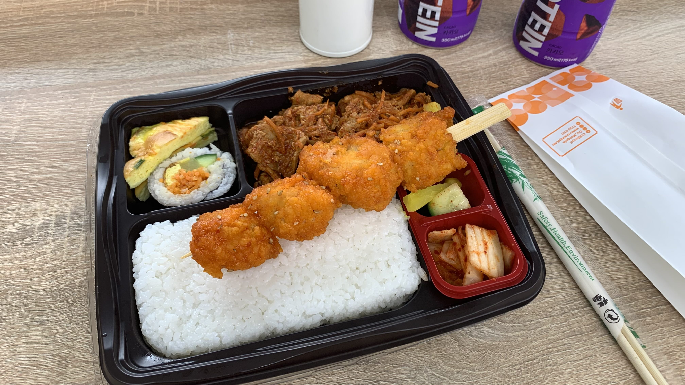
出發不到十公里，看到一間CU，就滑進去吃了午飯。究竟多麼抗拒離開人造空間呢？
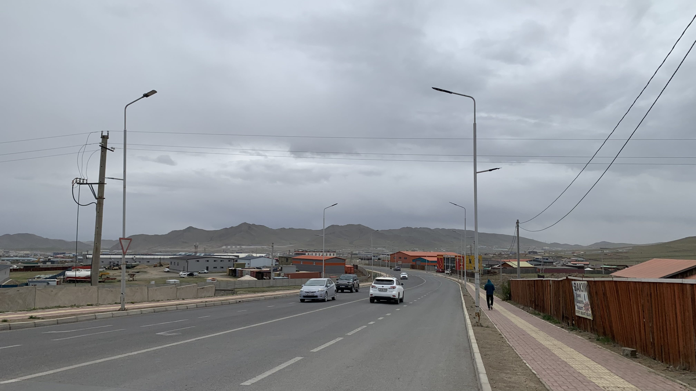
吃飽後已經沒有蹉跎的理由，磨磨蹭蹭往西邊走，不知怎麼地跑到一個山坡上的聚落。繞著蜿蜒的道路，過了一小時才找到下坡接回主線道。
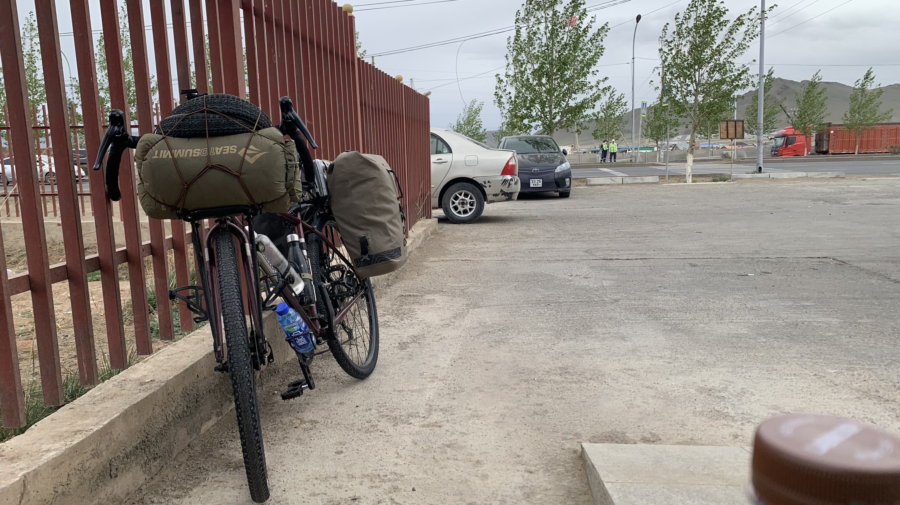
然後又看到一間CU，畢竟已經吃飽，只能買個蘋果汁和巧克派坐在門口發呆。
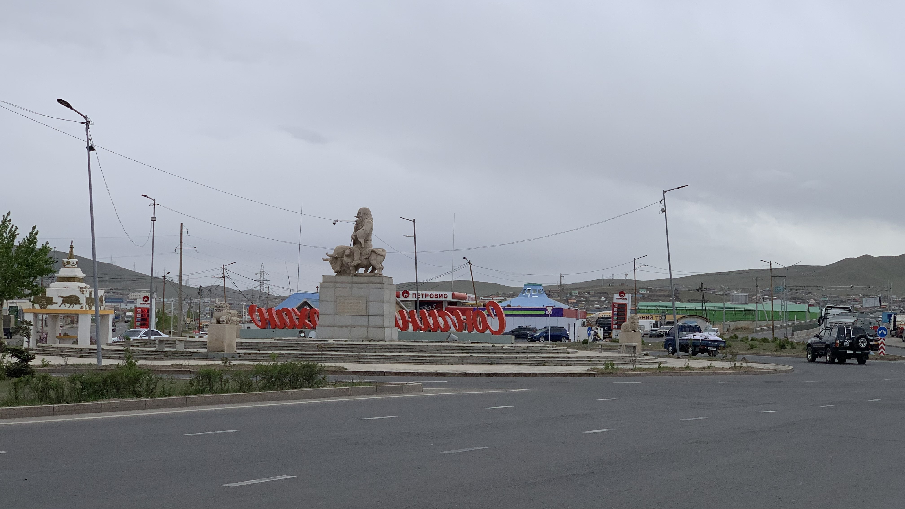
被風吹冷了，起身繼續往西邊移動。突然看見一位騎牛老人雕像，不確定是什麼典故，先拍下來再說。
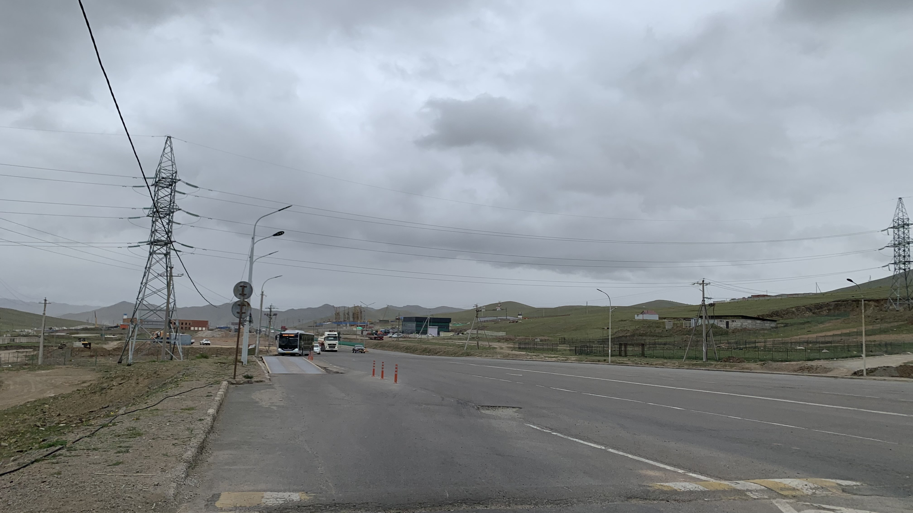
騎了幾公里的上坡，發現馬鞍袋口環沒有卡好，停在路邊調整時發現自己已經往北移動了四公里。此時天空又開始飄雨，啊啊啊啊啊，為什麼一直騎錯路呢？即便這麼問也只能往回走。
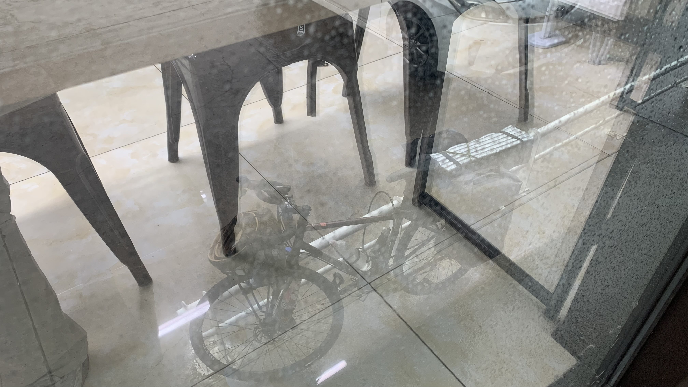
約莫12公里左右，看到一間CU，毫不遲疑地鎖上車進門躲雨。看看時間已經下午四點了，距離出發地市中心竟然只推進了20公里。真的預料不到啊。
看著窗外的二十三號，滑著地圖上的加油站、超商空地和前人留下的露宿標記，最近的木屋距離還有五公里。雖然天色黯淡，還算是可以推進的距離。喝完咖啡立刻和店員們確認附近紮營的可能性，並拿出兩個禮拜前的照片表示我具備睡在路邊的經驗。沒想到其中一個店員說：「今天下雨，八點，到我家。」
Nice to CU🥹
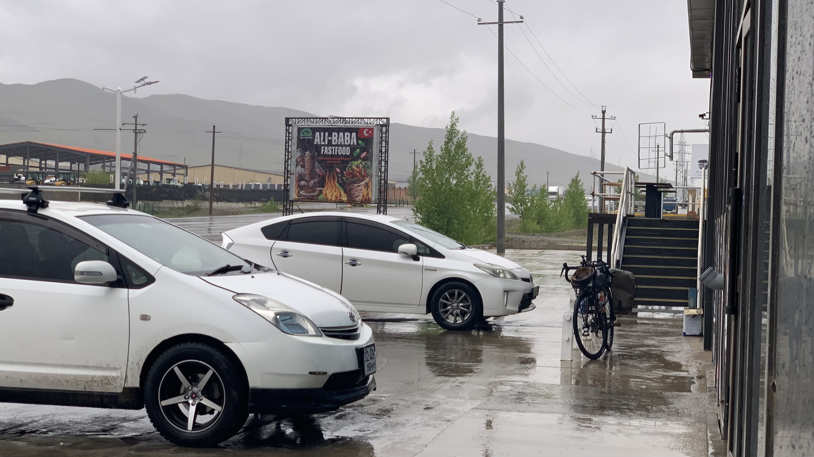
咖啡喝完了，晚餐時間客人有點多，下樓看看愛駒是否安好。雨越下越大了。
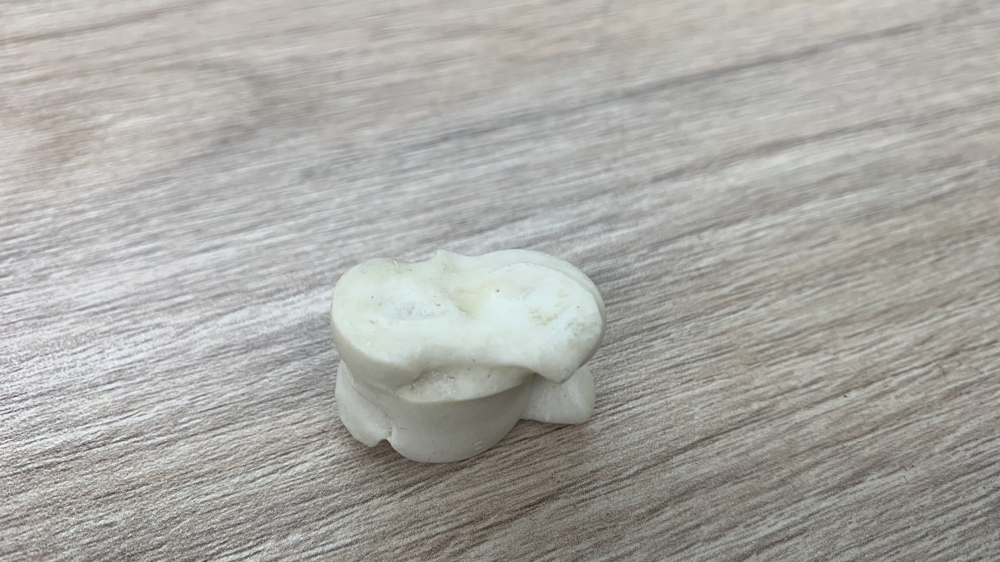
從包裡拿出新買的沙蓋上樓跟店員一起玩，結果他說這種羊腳踝骨在牧民家都是免費的。四個面代表四種動物，最平的面是馬、對面凹陷的是駱駝，平滑圓弧狀的是綿羊，中間有一條縫隙的是山羊。
學習了從一數到十、四種動物，還有「出太陽很熱」、「下雨很冷」的蒙語。六點左右來了三位交警，各自買了泡麵坐在我旁邊吃。其中一位倒了一杯可樂給我，拿起桌上的沙蓋就開始隨堂考，感謝他的測試，現在四種動物的蒙語已經倒背如流。
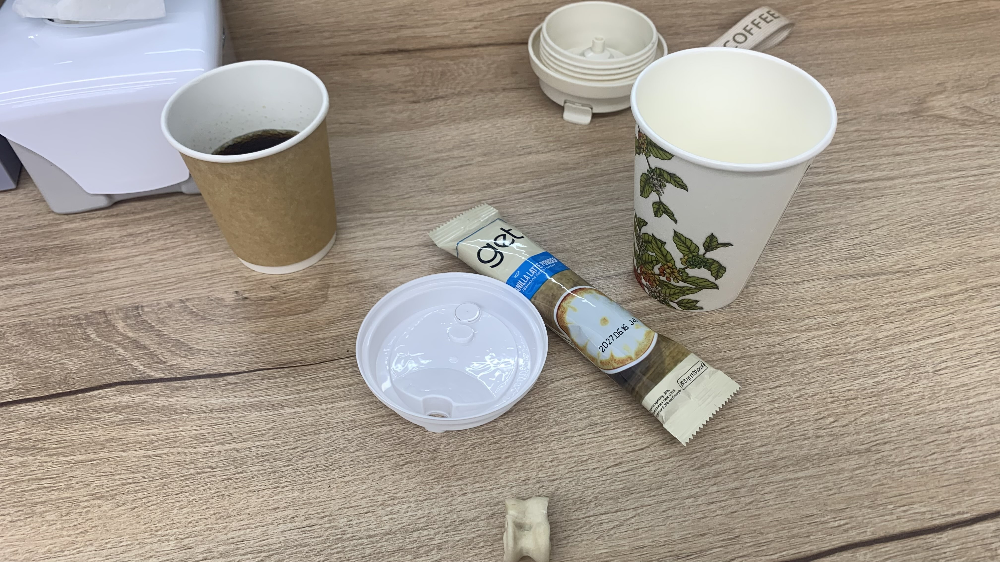
另一位交警又買了一杯拿鐵給我，問說外面的車是我的嗎？我說是的。他們就說：「下雨很冷吧？」這句剛學過啊，馬上回答：「是的！」
警察先生跟店員溝通後要我把車牽進室內，相當感恩，趕緊把二十三號帶進來吹暖氣。
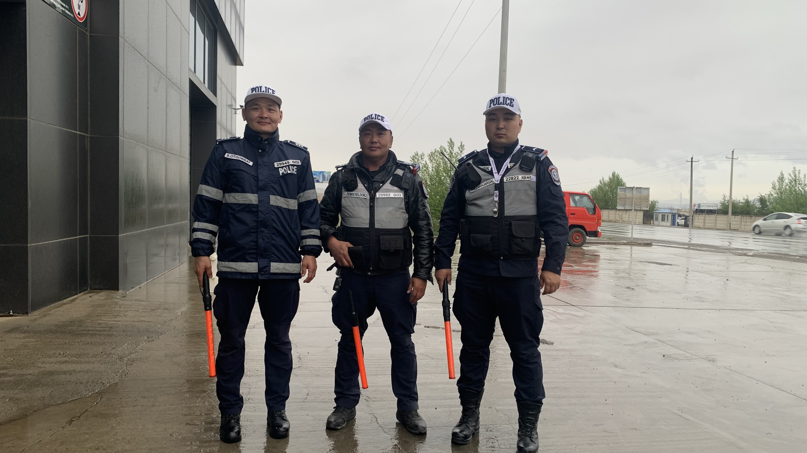
用手機翻譯和大家聊天，本來問我會不會看那達慕，可惜七月才舉行。
照片左邊給我可樂的警察先生問我：「是從日本來蒙古騎車嗎？」
「我從日本出發，騎車到法國。」他們發出讚賞後，馬上接著問：「可以幫你們拍張照嗎？」
意外地三個人都說可以，還立刻招手要我出去，跑到警車上拿了帽子和指揮棒，拍下一張帥照。
這裡是重拾人性光輝俱樂部吧？
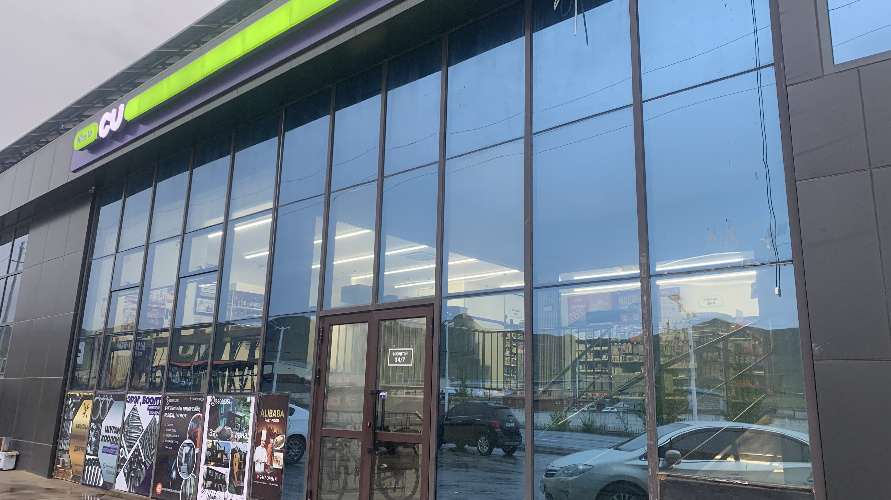
晚上八點了，夜班同事沒有出現，看來打工遲到的習性是不分國界的。將近九點，接班的同事終於來了。
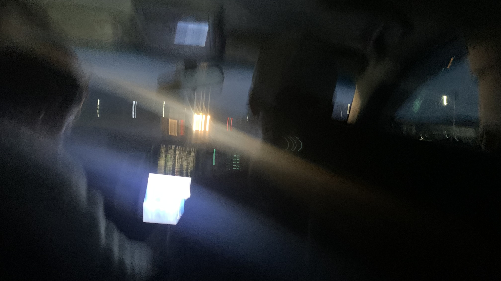
收留我的店員帶著我下樓，和他老公一起拆下馬鞍包，把二十三號放在車廂裡就這麼開車回家。車上播放的是蒙古的流行樂MV，除了服裝和語言，嘻哈和你情我愛的內容與台灣似乎沒啥不同。
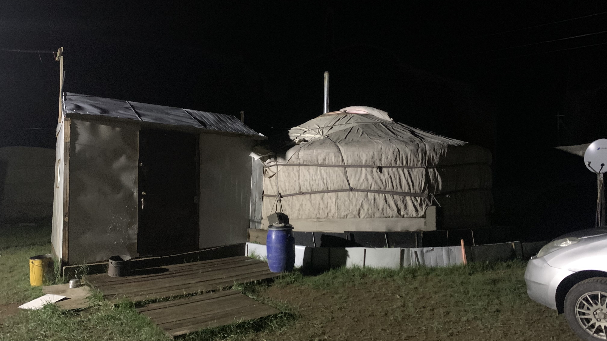
經過一個叉路口，車子突然駛向旁邊的土路，在草地與木板、水泥搭起的圍籬中繞了幾圈，抵達他們的家。
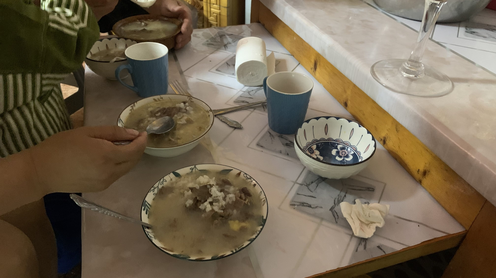
喔，對了，店員叫做楊金。下車後他們兩人一個在外拉繩子，讓蒙古包頂部露出空間，另一人則從裡面架起火爐的排氣管。生起火後立刻開始煮飯。
雖然已經知道對方很年輕，但沒想到已經有兩個孩子了。他們說蒙古人二十一、二歲就會結婚，因此聽到我的年紀兩人都嚇了一大跳。
吃飽後躺在地毯上，今天是怎麼一回事呢？
今日花費： 郵局1585、早餐 387、午餐 249、零食＋飲料 57、咖啡＋飲料 121（皆為台幣）元